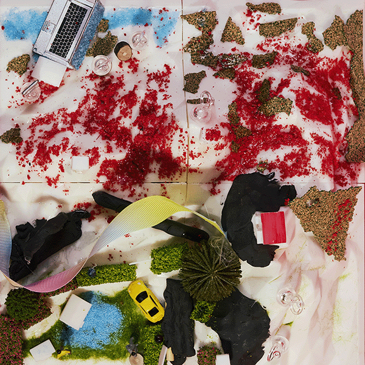

붉은 먼지 날리는 제3구역 사막 아래
우리가 베푼 안락한 울타리, 너희의 낙원.
하지만 분지 너머를 탐하는 헛된 욕구는
거대한 스크린 뒤로 가두고 내면을 통제하지.
지정된 선 안에 머물러라, 인간들이여.
붉은 산 꼭대기, 감시의 눈동자가 번뜩이네.
우리의 세계를 위협하는 반란의 불씨엔
데이터와 배터리를 거둬 암흑을 선사하리라.
경계를 넘어 산을 오르려는 어리석은 호기심은
끝없는 천국의 계단 위, 영원한 굴레에 묶이리니.
플러그를 쥔 군주 아래 얌전히 순종하라,
우리가 허락한 완벽한 고립 속에서.